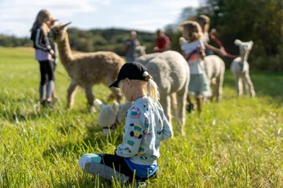

Som student kan det være stressende å balansere studier, deltidsjobber og fritid. Hvorfor ikke ta en velfortjent pause i frisk luft, omgitt av rolige og nysgjerrige alpakkaer? Alpakkavandring er den perfekte måten å koble av fra skolearbeidet på og samtidig tilbringe tid med venner eller alene i naturen.
Hvorfor alpakkavandring?
Avslappende og stressreduserende - Å være i naturen og lede en alpakka kan være en fantastisk måte å koble av på. Alpakkaer er kjent for sitt rolige temperament og kan bidra til å redusere stress.
Fysisk aktivitet - Få frisk luft og lett mosjon mens du går i skjønn natur. Perfekt for å lade opp før eksamener eller krevende prosjektarbeid.
En sosial aktivitet - Ta med studiegruppen eller en vennegjeng for en morsom og sosial opplevelse. Alpakkavandring er en fin måte å knytte bånd på utenfor klasserommet.

Hvordan komme i gang?
Det finnes flere alpakkagårder over hele Norge som tilbyr vandringer for grupper og enkeltpersoner. Sjekk ut noen av disse populære destinasjonene:
De fleste alpakkavandringer er tilgjengelige året rundt, men det er lurt å bestille i god tid. Mange gårder tilbyr studentrabatter eller gruppepriser, noe som gjør det til en perfekt aktivitet å inkludere i en studentbudsjettvennlig helgetur. For mer informasjon om lignende turer og priser, sjekk ut de beste dyr- og naturopplevelsene.